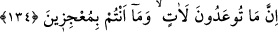

isimlendirilebilir. Esasen Allah’dan başkasının ihtiyaçları bitmez. Çünkü, insan varlık
ve zenginlik halinde de hakîkî zengin Allah’a muhtaçtır.
“Rahmet sahibidir.” Kullarını kemâle erdirmek için onlara yüklediği mükellefiyetler
konusunda kullarına merhamet eder. Günahlarına karşılık olanlara mühlet verir.
et-Te’vîlâtü’n-necmiyye’de şöyle denilmiştir: “Yani O, mahlûkattan müstağnî olduğu
halde rahmetinin sonsuzluğu gereğince onları yaratmıştır. Onlardan istifade etmek için
değil, bilakis onlar O’ndan istifade etsin diye.”
Mesnevî ’de şöyle denilmiştir:
Ey daima faal ve diri olan Allah’ım!
“Halkı, benden faydalansınlar diye yarattın,
Ben onlardan faydalanayım diye değil” buyurdun
Bu senin cömertliğindir; bütün noksanlar o cömertlikte düzelir
Bedene tapan şu kullarını afvet
Afv denizinin afvedişi yerinde bir iştir
Halkı ırmak gibi, sel gibi afvet; yıka, arıt
Kendi denizine daldır, temizle!
Ey âsîler, eğer Allah “dilerse sizi götürür” helâk eder. “Sizi” vasıfları sizin
vasıflarınız gibi olmayan “başka bir topluluğun soyundan” Nûh (a.s.)’ın gemisinde
bulunanlardan “yarattığı” merhametinden dolayı sizi bırakıp helak etmediği “gibi,
sizden sonra” yani, sizi helâk edip giderdikten sonra “da dilediğini sizin yerinize
getirir.” Başka bir millet, topluluk getirir ki onlar Allah’a sizden daha çok itâatkâr
olurlar.
Âyette akıl sahipleri için kullanılan ( ) harfinin değil de akıl sahibi olmayanlar için
kullanılan ( ) harfinin tercih edilmesi, Allah’ın azametinin kemâlini göstermek ve
onları akıllılar derecesinden aşağı düşürmek içindir.
Farsça tefsirde şöyle denilmiştir: Böylece sizi başka bir kavmin zürriyyetinden yarattı
ki onlar sizin atalarınız oldular.
134. Size vadedilen mutlaka gelecektir; siz bunu önleyemezsiniz.
“Size vadedilen” öldükten sonra dirilme ve azab, “muhakkak gelecektir.” Mutlaka
olacaktır ve bu vadedilenden asla dönülmeyecektir. “Siz onun önüne geçemezsiniz.”
Bundan kaçmak için her ne türlü vâsıtaya binseniz de kurtulamazsınız.